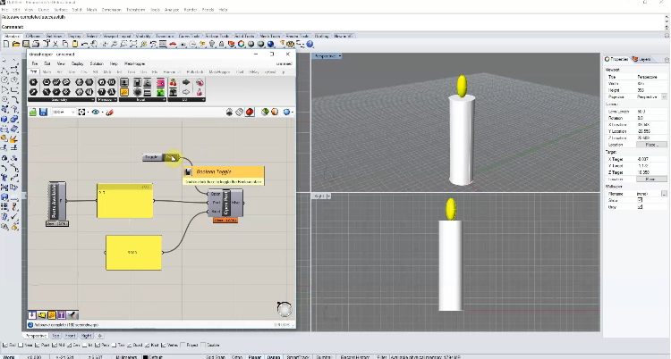

6.810 Engineering Interactive Technologies (fall 2020)
Install Rhino3D and Grasshopper

Deadline: due Friday (September 11, 2020) at 1pm, upload XXX here
Rhino3D and Grasshopper
Rhino3D is a 3D modeling program, Grasshopper is a plugin to Rhino3D that allows you to control 3D models via code.For instance, rather than creating 100 spheres manually, you can write a loop function in Grosshopper that creates those via code. Grasshopper can also interface with Arduino, for instance, if a physical object with a touch button gets touched, you can visualize this on your 3D model by sending the data from Arduino to Grasshopper, which then recolors the part of the model that was touched. More on this later.
Install
For Windows:
- Install Rhino 6: https://www.rhino3d.com/download/rhino-for-windows/6/latest
- After installing, open Rhino, and in the Rhino command line type "grasshopper" as described here
- After Grasshopper opened, go to File -->Special Folders --> Components Folder
- Copy-paste all the files from this folder into the Components Folder
- Restart Rhino
For Mac:
- Install Rhino 5: https://www.rhino3d.com/download/rhino-for-windows/6/latest
- After installing, open Rhino, and in the Rhino command line type "grasshopper" as described here
- After Grasshopper opened, go to File -->Special Folders --> Components Folder
- Copy-paste all the files from this folder into the Components Folder
- Restart Rhino
Other Operating Systems:
If you have another operating system, you need to setup a virtual machine to make Rhino work.If you have to setup a VM, we recommend that you set it up as a windows VM since Rhino is more stable on Windows.